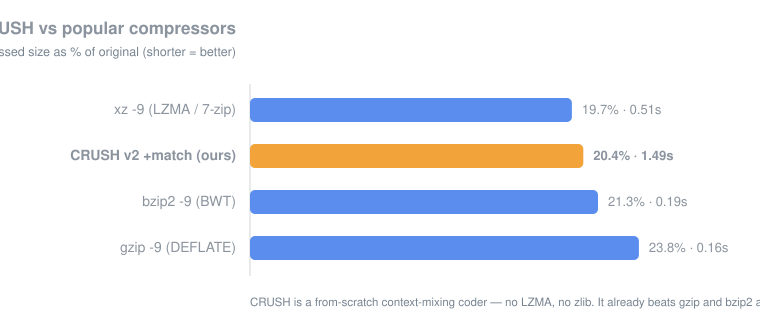

Benchmark

| tool | compressed | ratio | time |
|---|---|---|---|
| xz -9 (LZMA / 7-zip) | 206,960 | 19.7% | 0.51s |
| CRUSH v2 + match (ours) | 213,653 | 20.4% | 1.49s |
| bzip2 -9 (BWT) | 222,999 | 21.3% | 0.19s |
| gzip -9 (DEFLATE) | 249,040 | 23.8% | 0.16s |
1 MB of real mixed code + prose. Lower is better. CRUSH trades speed for ratio.
How it works
1
Range coder
Arithmetic coding over a shrinking 32-bit interval. A bit the model is 99% sure of costs ~0.014 bits, not a whole one — close to the true entropy.
2
Context mixing
Several models (contexts of the last 1–6 bytes) predict each bit; an adaptive mixer blends them in the logistic domain, learning who to trust.
3
Match model
A hash points back to where the last 6 bytes last appeared, predicting the next bit from the repeat — the dictionary power LZ tools get, fed into the mixer.
Use it
:: create, list, test, extract crush a backup.crush notes.txt report.pdf src\ crush l backup.crush crush t backup.crush crush x backup.crush out\ :: build from source (standalone, no DLLs) g++ -O2 -std=c++17 -static -o crush.exe crush.cpp